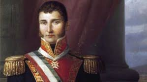
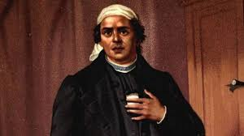

Miguel Hidalgo
 Miguel Hidalgo y Costilla, nacido en 1753 en Pénjamo, Guanajuato, es reconocido como el padre de la independencia de México. Fue sacerdote, líder militar y activista, desempeñando un papel fundamental en la lucha contra el dominio español en el siglo XIX. Estudió en el Colegio de San Nicolás Obispo y obtuvo un doctorado en teología. Su preocupación por las injusticias sociales lo llevó a involucrarse en actividades políticas y revolucionarias. Capturado y ejecutado en 1811, su legado como un líder valiente y visionario sigue siendo venerado en México y más allá.
Miguel Hidalgo y Costilla, nacido en 1753 en Pénjamo, Guanajuato, es reconocido como el padre de la independencia de México. Fue sacerdote, líder militar y activista, desempeñando un papel fundamental en la lucha contra el dominio español en el siglo XIX. Estudió en el Colegio de San Nicolás Obispo y obtuvo un doctorado en teología. Su preocupación por las injusticias sociales lo llevó a involucrarse en actividades políticas y revolucionarias. Capturado y ejecutado en 1811, su legado como un líder valiente y visionario sigue siendo venerado en México y más allá.
Agustin de Iturbide
Agustín de Iturbide es una figura destacada en la historia de México, conocido por su papel fundamental en la independencia del país y su breve reinado como emperador. Nacido el 27 de septiembre de 1783 en Valladolid, actual Morelia, Iturbide inició su carrera militar en el ejército realista español, pero posteriormente se unió al movimiento insurgente mexicano. Regresó a México en 1824, pero fue arrestado y ejecutado poco después. A pesar de su corto gobierno, el legado de Agustín de Iturbide sigue siendo objeto de debate y análisis en la historia mexicana, ya que su papel en la independencia y su breve reinado dejaron una huella significativa en el país.
Jose Maria Morelos
José María Morelos y Pavón es una figura central en la historia de México, reconocido por su destacado liderazgo durante la lucha por la independencia del país. Nacido el 30 de septiembre de 1765 en Valladolid, actual Morelia, Morelos fue un sacerdote católico que se unió al movimiento insurgente liderado por Miguel Hidalgo. A pesar de sus logros, Morelos fue capturado y ejecutado por las fuerzas realistas en 1815. A pesar de su trágico final, su legado como líder insurgente y defensor de los derechos humanos perdura en la historia de México, siendo recordado como uno de los héroes de la independencia del país.